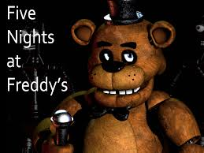

Para entender la historia de Five Nights at Freddy's hay que olvidarse que estos son juegos y quiero que tomen realmente a esta saga como lo que es. ¿Terror? Sí, pero sobre todo, ciencia ficción.
Five Nights at Freddy's (FNaF) es una serie de videojuegos de terror creada por Scott Cawthon que ha ganado popularidad mundial por su enfoque innovador y aterrador. Aquí te doy un resumen completo de su historia, juegos y aspectos más destacados:
En la mayoría de los juegos de la saga Five Nights at Freddy's, el jugador asume el papel de un guardia de seguridad que trabaja en un restaurante ficticio llamado Freddy Fazbear's Pizza (inspirado en restaurantes reales como Chuck E. Cheese). Este lugar está poblado por animatrónicos, personajes robóticos que originalmente están destinados a entretener a los niños durante el día. Sin embargo, por la noche, estos animatrónicos se vuelven extremadamente peligrosos y acechan al protagonista.
Argumento general:
El jugador debe sobrevivir cinco noches (aunque algunos juegos incluyen más noches adicionales) vigilando a los animatrónicos a través de cámaras de seguridad y gestionando los recursos disponibles (como la energía) para evitar ser capturado.
Los animatrónicos están poseídos por los espíritus de niños asesinados. A lo largo de los juegos, se va descubriendo una trama más oscura que involucra al misterioso "Hombre Morado", quien sería responsable de los asesinatos de los niños.
Hasta la fecha, la serie principal de Five Nights at Freddy's incluye varios títulos, cada uno con una mecánica de juego ligeramente diferente y una mayor complejidad en la historia.
Resumen: El primer juego introduce la mecánica central donde el jugador vigila los animatrónicos desde una oficina. El desafío es evitar que los robots entren en la oficina utilizando las puertas y luces, con un límite de energía. Animatrónicos principales: Freddy Fazbear, Bonnie the Bunny, Chica the Chicken, y Foxy the Pirate.
Resumen: En este juego, la mecánica cambia un poco. No hay puertas para bloquear a los animatrónicos, pero se introduce una máscara de Freddy Fazbear que puede engañar a algunos de ellos. Nuevos personajes: Nuevas versiones de los animatrónicos clásicos y otros como Balloon Boy y The Puppet.
Resumen: Este juego tiene lugar en un parque de atracciones de terror basado en los eventos anteriores de Freddy Fazbear's Pizza. Aquí aparece un animatrónico principal llamado Springtrap, que es una combinación de robot y humano. Elemento nuevo: Se añaden alucinaciones y la mecánica de sistemas de ventilación y audio que deben mantenerse en funcionamiento.
Resumen: El juego se traslada a una casa y el jugador es un niño que debe defenderse de versiones "pesadilla" de los animatrónicos. Terror psicológico: Aquí la atmósfera es aún más claustrofóbica, ya que los animatrónicos acechan desde los pasillos y armarios.
Resumen: Aquí el jugador trabaja en una instalación secreta llamada Circus Baby's Entertainment and Rental. El juego introduce nuevos animatrónicos como Circus Baby, Funtime Freddy y Ballora, y ofrece una experiencia más orientada a la narrativa. Mecánicas nuevas: El jugador debe realizar varias tareas, en lugar de solo vigilar cámaras.
Resumen: Este juego comienza como un simulador de pizzería, pero eventualmente revela una mecánica de supervivencia en la oficina. Nuevas adiciones: Hay una mezcla de gestión de recursos y las mecánicas clásicas de vigilancia de los animatrónicos.
Resumen: Un juego de realidad virtual que recrea las mejores partes de los juegos anteriores y presenta nuevas pesadillas en un entorno de RV inmersivo. Plataformas: Disponible en VR, aunque también tiene una versión jugable en consolas sin realidad virtual.
Resumen: Este juego es completamente diferente de sus predecesores, ya que es un juego en mundo abierto donde el jugador explora un enorme centro comercial llamado Mega Pizzaplex. Juegas como Gregory, un niño atrapado dentro del complejo. Nuevas características: Ofrece una experiencia más extensa con libertad para moverse por el mapa y evitar a los animatrónicos, que ahora tienen inteligencia artificial avanzada.